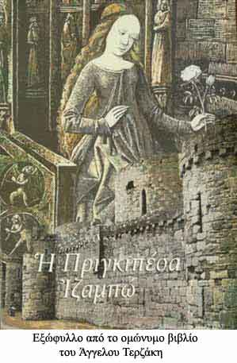

| Το κάστρο στη λαϊκή φαντασία  Τούτηνε την ιστορία να τηνε πιστέψεις. Τηνε παραδόθηκα από τον πατέρα μου. Ήταν κι αλαφροήσκιωτος… Το κάστρο το’ χε μια βασιλοπούλα πλούσια κι όμορφη, που την αγαπούσε το ρηγόπουλο της Βενετιάς. Η βασιλοπούλα είχε κ’ έναν αργαλειόν ολόχρυσο, με σαΐτα διαμαντένια κ’ ύφαινε τα χρυσά προικιά της, περιμένοντας το ρηγόπουλο της Βενετιάς, που θα ’ρχότανε να κάμουνε το γάμο. Εκείνον τον καιρό ο σουλτάνος των Αγαρινών έμαθε για την όμορφη βασιλοπούλα και τηνε θέλησε να την κάμει χαρέμι του. Έστειλε το λοιπόν ασκέρια δυνατά με τρεις πασάδες κ’ έζωσαν από παντού το κάστρο. Ο πόλεμος βάσταξε πολύ. Το ρηγόπουλο δε φαινόταν πουθενά, μα κ’ οι Τούρκοι τίποτε δεν κατάφερναν. Σαν είδαν και απόειδαν οι πασάδες το λοιπόν, αποφάσισαν να μπουν στο κάστρο με μπαμπεσιά. Έκαμαν μυστικό συμβούλιο και … ο πιο μικρός πασάς βγάνει τα χρυσά σκουτιά του κ’ εφόρεσε καλογερίστικα. Έτσι έφτασε στα τειχιά του κάστρου κ’ εκαμώθηκε πως ήταν τάχατες καλογεράκι απ’ το μοναστήρι της Παναγιάς και ζητούσε να μπει στο κάστρο. - Ανοίξτε μου, ευλογημένοι, ανοίξτε χριστιανοί. Έρχουμ’ απ’ το μοναστήρι. Μαζεύω λαδάκι για τα καντήλια της Παναγιάς. Ανοίξτε την καστρόπορτα, τι με κρατάτε τόσηνε ώρα στη βροχή ευλογημένοι; Και τότε η βασιλοπούλα, που ήταν θεοσεβούμενη, διατάζει ν’ ανοίξουν την πόρτα και να μπάσουν μέσα τον καλόγερο: - Ανοίξτε βιγλάτορες τη μεγάλη πόρτα! Ανοίγουνε την πόρτα το λοιπόν να μπει ο ψευτοκαλόγερος και την ίδια στιγμή σαλτάρουνε μπουλούκια Τούρκοι, που ήταν κρυμμένοι και κάνουν γιουρούσι μέσα στο κάστρο. Οι στρατιώτες του κάστρου με τη βασιλοπούλα ταμπουρώθηκαν στην προσηλιακή ντάπια κ’ εκεί πολέμησαν σαν παλληκάρια. Σαν είδεν η βασιλοπούλα πως δεν γλιτώνει πια, δίνει μια και πάει φούντο κάτω στο γκρεμό. Έπεσε με τ’ άλογό της απ’ τους βράχους της προσηλιακής ντάπιας κάτου στη θάλασσα και πνίγηκε. Ακόμα φαίνουνται στους βράχους οι πατημασιές του αλόγου της. Ήταν παραμονή της Αναλήψεως τη νύχτα, όντες οι Τούρκοι μπήκαν στο κάστρο. Τα ξημερώματα της Αναλήψεως ανήμερα, νάσου και φτάνει η βενετσιάνικη αρμάδα με το ρηγόπουλο στην καπιτάνα. Μα ήταν πια αργά. Η βασιλοπούλα ήταν χαμένη κ’ οι Τούρκοι μέσ’ στο κάστρο. Σαν πληροφορήθηκε το ρηγόπουλο όσα συνέβησαν, διατάζει: - Ρότα η καπιτάνα κατά το κάστρο, εκεί προς τη μεριά της προσηλιακής ντάπιας που ‘πεσε η βασιλοπούλα. Και αφού είπε κάτι λόγια μυστικά, βγάνει τη βέρα του και τηνε ρίχνει μέσα στο νερό. Λένε πως το ρηγόπουλο δεν έζησε καιρό. Πέθανε απ’ τον καϋμό του. Εκείνο που ξέρω στα σίγουρα είναι πως από τότε η προσηλιακή ντάπια του κάστρου είναι στοιχειωμένη. Κάθε χρόνο της Αναλήψεως, κοντά στα ξημερώματα, οι ψαράδες ακούνε φωνές κι ουρλιαχτά. Κι όσοι είναι αλαφροήσκιωτοι βλέπουν μια ολόκληρη αρμάδα κ’ ένα κάτεργο ολόχρυσο να κοντοστέκει στην προσηλιακή ντάπια του κάστρου. «Το κάστρο της Κορώνης» από το βιβλίο του Γιάννη Γκίκα, Κάστρα του θρύλου και της ιστορίας |
||